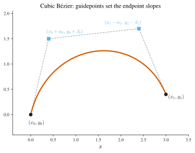
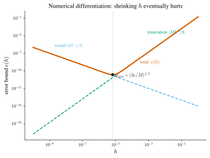

2 Numerical Differentiation & Integration
\[ \newcommand{\R}{\mathbb{R}} \newcommand{\C}{\mathbb{C}} \newcommand{\N}{\mathbb{N}} \newcommand{\E}{\mathbb{E}} \newcommand{\eps}{\varepsilon} \newcommand{\abs}[1]{\left\lvert #1 \right\rvert} \newcommand{\norm}[1]{\left\lVert #1 \right\rVert} \newcommand{\ninf}[1]{\left\lVert #1 \right\rVert_{\infty}} \newcommand{\ntwo}[1]{\left\lVert #1 \right\rVert_{2}} \newcommand{\none}[1]{\left\lVert #1 \right\rVert_{1}} \newcommand{\inner}[2]{\left\langle #1,\, #2 \right\rangle} \newcommand{\bigO}{\mathcal{O}} \newcommand{\dd}{\mathrm{d}} \newcommand{\diff}[2]{\frac{\mathrm{d} #1}{\mathrm{d} #2}} \newcommand{\pdiff}[2]{\frac{\partial #1}{\partial #2}} \newcommand{\spec}{\rho} \newcommand{\cond}{\kappa} \newcommand{\Span}{\operatorname{span}} \newcommand{\rank}{\operatorname{rank}} \newcommand{\tr}{\operatorname{tr}} \newcommand{\diag}{\operatorname{diag}} \newcommand{\argmax}{\operatorname*{arg\,max}} \newcommand{\argmin}{\operatorname*{arg\,min}} \newcommand{\defeq}{:=} \]
Interpolation (Chapter 1) gave us a polynomial that stands in for a function known only at nodes. The natural next move is to differentiate and integrate that polynomial in place of \(f\). Differentiation turns out to be delicate — the exact formulas are easy, but finite precision fights back, so shrinking the step size \(h\) eventually makes the answer worse. Integration is the happier story: replacing \(f\) by an interpolant yields the classical quadrature rules, and because integration averages rather than amplifies, these rules are stable and can be pushed to very high accuracy. This chapter develops both, closing the loop on the parametric-curve thread that Chapter 1 deferred here.
2.1 Parametric and Bézier curves
A curve in the plane need not be the graph of a function: it may double back, cross itself, or close up. The device is to treat it parametrically, as \((x(t),y(t))\) for \(t\) in some interval, and to interpolate each coordinate against the parameter \(t\) separately. Given \(n+1\) data points \((x_j,y_j)=(x(t_j),y(t_j))\), one may fit \(x(t)\) and \(y(t)\) by any of the tools of Chapter 1 — a single high-degree polynomial for each coordinate, or a spline for each. The polynomial route inherits the Runge oscillations of Figure 1.1; splines are steadier but solve a global system. Interactive design wants something local: a handle you can drag that reshapes one stretch of the curve without disturbing the rest.
Bézier curves provide exactly that by building the curve from piecewise cubic Hermite pieces (Section 1.4), one cubic per pair of adjacent data points. On a single piece, reparametrised to \(t\in[0,1]\) with endpoints \((x_0,y_0)\) and \((x_1,y_1)\), a cubic Hermite polynomial in each coordinate carries four degrees of freedom: the two endpoint positions and the two endpoint derivatives \(x'(0),x'(1)\) and \(y'(0),y'(1)\). Prescribing the endpoints uses two of them; the derivatives are the free handles. Bézier’s idea is to specify those derivatives not as numbers but through two guidepoints placed near the ends, \[ (x_0+\alpha_0,\;y_0+\beta_0)\quad\text{and}\quad (x_1-\alpha_1,\;y_1-\beta_1), \] by setting \[ \begin{pmatrix}x'(0)\\ y'(0)\end{pmatrix}=\begin{pmatrix}\alpha_0\\ \beta_0\end{pmatrix}, \qquad \begin{pmatrix}x'(1)\\ y'(1)\end{pmatrix}=\begin{pmatrix}\alpha_1\\ \beta_1\end{pmatrix}. \] The tangent direction the eye actually sees is the slope \(\dd y/\dd x\), and by the chain rule at the endpoints it is \[ \left.\diff{y}{x}\right|_{t=0}=\frac{y'(0)}{x'(0)}=\frac{\beta_0}{\alpha_0}, \qquad \left.\diff{y}{x}\right|_{t=1}=\frac{y'(1)}{x'(1)}=\frac{\beta_1}{\alpha_1}. \] So the guidepoint at each end sits along the tangent there: dragging it swings the slope and stretches the curve, while the neighbouring pieces — anchored at their own endpoints and guidepoints — do not move (Figure 2.1). This locality is why Bézier cubics wrap font outlines and vector-graphics paths.

A cubic Hermite piece needs a slope at each end, but a slope is an abstract number a designer cannot see. A guidepoint is a point on the screen lying along that slope, so the same four cubic coefficients are fixed by four visible handles — two anchors and two guidepoints. Because each piece depends only on its own four handles, editing one segment leaves the rest of the curve untouched, the property both single high-degree interpolation and global splines lack.
2.2 Numerical differentiation
To approximate \(f'(x_0)\) from function values, truncate the definition of the derivative: \[ f'(x_0)=\lim_{h\to 0}\frac{f(x_0+h)-f(x_0)}{h}\approx\frac{f(x_0+h)-f(x_0)}{h},\qquad \abs{h}\text{ small.} \] How good is the approximation? A Taylor expansion with remainder answers it. For \(f\in C^2\) near \(x_0\) there is \(\xi\) between \(x_0\) and \(x_0+h\) with \[ f(x_0+h)=f(x_0)+hf'(x_0)+\tfrac12 h^2 f''(\xi), \] so, solving for \(f'(x_0)\), \[ f'(x_0)=\frac{f(x_0+h)-f(x_0)}{h}-\tfrac12 h\,f''(\xi). \tag{2.1}\] This is the forward-difference formula (take \(h>0\)); with \(h<0\) the same identity reads as the backward-difference formula. The truncation error is \(-\tfrac12 h f''(\xi)=\bigO(h)\): halving \(h\) halves the error. For \(f(x)=\ln x\) at \(x_0=1.8\), for instance, \(f''(x)=-1/x^2\) gives \(\tfrac12\abs{hf''(\xi)}\le \tfrac12\abs{h}/1.8^2\) for \(\xi\in[1.8,1.9]\), so \(h=0.1,0.05,0.01\) bound the error by about \(0.0154,0.0077,0.0015\).
The general interpolatory formula
The one-sided formula is the \(n=1\) case of a general recipe: differentiate the interpolation identity of Theorem 1.2. With \(n+1\) distinct nodes \(x_0,\dots,x_n\), \[ f(x)=\sum_{j=0}^n f(x_j)L_{n,j}(x)+\frac{f^{(n+1)}(\xi(x))}{(n+1)!}\prod_{i=0}^n(x-x_i), \] where \(L_{n,j}\) is the Lagrange basis Equation 1.1. Differentiating and then evaluating at a node \(x=x_k\) kills the term in which the node polynomial \(\prod_i(x-x_i)\) appears undifferentiated (it vanishes at \(x_k\)), so the unknown derivative of \(\xi(x)\) drops out and \[ f'(x_k)=\sum_{j=0}^n f(x_j)\,L_{n,j}'(x_k) +\frac{f^{(n+1)}(\xi(x_k))}{(n+1)!}\prod_{i\ne k}(x_k-x_i) \;\approx\;\sum_{j=0}^n f(x_j)\,L_{n,j}'(x_k). \tag{2.2}\] This \((n+1)\)-point formula holds for arbitrary nodes; the weights \(L_{n,j}'(x_k)\) are computed once from the nodes. For \(n=1\) with two nodes, \(L_{1,0}'(x)=1/(x_0-x_1)\) and \(L_{1,1}'(x)=1/(x_1-x_0)\), so Equation 2.2 recovers \(f'(x_0)\approx\bigl(f(x_0)-f(x_1)\bigr)/(x_0-x_1)\), i.e. Equation 2.1.
For equispaced nodes the useful cases fall out of Taylor expansions directly, which also pin down the error constants. Adding the expansions of \(f(x_0\pm h)\), \[ f(x_0+h)+f(x_0-h)=2f(x_0)+h^2 f''(x_0)+\frac{h^4}{24}\bigl(f^{(4)}(\xi_+)+f^{(4)}(\xi_-)\bigr), \] and applying the intermediate value theorem to average the two fourth derivatives gives the second-derivative central formula \[ f''(x_0)=\frac{f(x_0+h)-2f(x_0)+f(x_0-h)}{h^2}-\frac{h^2}{12}f^{(4)}(\xi). \tag{2.3}\] Subtracting instead cancels the even terms and gives the three-point midpoint formula \[ f'(x_0)=\frac{f(x_0+h)-f(x_0-h)}{2h}-\frac{h^2}{6}f^{(3)}(\xi), \tag{2.4}\] whose \(\bigO(h^2)\) error beats the one-sided \(\bigO(h)\) of Equation 2.1 because the symmetric stencil cancels the \(f''\) term.
Round-off instability
Every difference formula divides by a power of \(h\), and that division is where finite precision turns dangerous. Suppose the stored values carry round-off error, \[ f(x_0\pm h)=\widehat f(x_0\pm h)+e(x_0\pm h),\qquad \abs{e(x_0\pm h)}\le\eps, \] and use the three-point midpoint formula Equation 2.4 on the computed values \(\widehat f\). Then \[ f'(x_0)-\frac{\widehat f(x_0+h)-\widehat f(x_0-h)}{2h} =\frac{e(x_0+h)-e(x_0-h)}{2h}-\frac{h^2}{6}f^{(3)}(\xi), \] and with \(\abs{f^{(3)}}\le M\) the triangle inequality yields the total error bound \[ \left| f'(x_0)-\frac{\widehat f(x_0+h)-\widehat f(x_0-h)}{2h}\right| \le \frac{\eps}{h}+\frac{Mh^2}{6}\;\defeq\; e(h). \tag{2.5}\] The two terms pull in opposite directions: the truncation term \(Mh^2/6\) wants \(h\) small, while the round-off term \(\eps/h\) blows up as \(h\to 0\) because the subtraction \(\widehat f(x_0+h)-\widehat f(x_0-h)\) cancels significant digits and the result is divided by the tiny \(2h\). Minimising \(e(h)\) by setting \(e'(h)=-\eps/h^2+Mh/3=0\) gives \[ h_{\min}=\left(\frac{3\eps}{M}\right)^{1/3}=\bigO(\eps^{1/3}), \qquad e_{\min}=\tfrac12\bigl(9M\eps^2\bigr)^{1/3}=\bigO(\eps^{2/3}). \] So there is an optimal step size (Figure 2.2): with double precision \(\eps\approx 10^{-16}\) the best \(h\) is around \(10^{-5}\), and no finite-difference derivative can be trusted to better than about \(\eps^{2/3}\approx 10^{-11}\). Pushing \(h\) below \(h_{\min}\) increases the error.

Round-off instability is specific to differentiation, where dividing by \(h\) magnifies cancellation. Integration, developed next, multiplies function values by weights of size \(\bigO(h)\) and sums them, so errors average out rather than amplify — the composite rules of Section 2.5 are numerically stable.
2.3 Richardson extrapolation
A formula like Equation 2.1 approximates an unknown quantity \(M\) (here \(f'(x_0)\)) by \(N_1(h)\), with a truncation error that expands in powers of \(h\): \[ M-N_1(h)=K_1 h+K_2 h^2+K_3 h^3+\cdots=\bigO(h), \tag{2.6}\] the constants \(K_i\) unknown but independent of \(h\). Richardson extrapolation exploits the one fact we control — the same expansion holds for any nonzero step, in particular \(h/2\) — to annihilate the leading term. Writing Equation 2.6 at \(h/2\), \[ M-N_1(\tfrac h2)=K_1\tfrac h2+K_2\tfrac{h^2}{4}+K_3\tfrac{h^3}{8}+\cdots, \] and forming twice this minus Equation 2.6 cancels \(K_1\): \[ M-N_2(h)=-\tfrac12 K_2 h^2-\tfrac34 K_3 h^3-\cdots=\bigO(h^2), \qquad N_2(h)\defeq N_1(\tfrac h2)+\bigl(N_1(\tfrac h2)-N_1(h)\bigr). \] The new formula \(N_2\) is one order more accurate, and it is built only from evaluations of \(N_1\). Because \(M-N_2(h)\) is again a power series, the process repeats. In general define \[ N_j(h)=N_{j-1}(\tfrac h2)+\frac{N_{j-1}(h/2)-N_{j-1}(h)}{2^{\,j-1}-1}, \qquad M-N_j(h)=\bigO(h^{j}), \tag{2.7}\] which fills a triangular table: column \(1\) holds \(N_1(h),N_1(h/2),N_1(h/4),\dots\), and each further column is one order higher.
Even-power series. Central-difference formulas such as Equation 2.4 have expansions in even powers only, \(M-N_1(h)=K_1 h^2+K_2 h^4+K_3 h^6+\cdots=\bigO(h^2)\), because the odd terms cancelled in the symmetric stencil. Then each extrapolation step removes two orders at once, and the denominators change accordingly: \[ N_j(h)=N_{j-1}(\tfrac h2)+\frac{N_{j-1}(h/2)-N_{j-1}(h)}{4^{\,j-1}-1}, \qquad M-N_j(h)=\bigO(h^{2j}). \tag{2.8}\]
Example 2.1 (Extrapolating a central difference) For \(f(x)=xe^x\) we have \(f'(x)=(1+x)e^x\), so \(f'(2.0)=3e^2\approx 22.167\). The central difference Equation 2.4 gives \[ N_1(0.1)=\frac{f(2.1)-f(1.9)}{0.2}\approx 22.229, \qquad N_1(0.2)=\frac{f(2.2)-f(1.8)}{0.4}\approx 22.414. \] One even-power step Equation 2.8 with \(j=2\) (denominator \(4^1-1=3\)) combines them into \[ N_2(0.2)=N_1(0.1)+\frac{N_1(0.1)-N_1(0.2)}{3}\approx 22.167, \] matching \(f'(2.0)\) to all shown digits. Written out, this fourth-order formula is \[ f'(x)\approx\frac{f(x-2h)-8f(x-h)+8f(x+h)-f(x+2h)}{12h}. \]
2.4 Newton–Cotes quadrature
Turn now to \(\int_a^b f(x)\,\dd x\). The quadrature strategy is to replace \(f\) by its degree-\(n\) interpolant on \(n+1\) points \(a\le x_0<\cdots<x_n\le b\) and integrate the polynomial exactly. From Theorem 1.2, \[ \int_a^b f(x)\,\dd x =\underbrace{\sum_{j=0}^n a_j f(x_j)}_{\int_a^b P(x)\,\dd x} +\frac{1}{(n+1)!}\int_a^b f^{(n+1)}(\xi(x))\prod_{j=0}^n(x-x_j)\,\dd x, \qquad a_j=\int_a^b L_{n,j}(x)\,\dd x, \tag{2.9}\] so the weights \(a_j\) are the integrals of the Lagrange basis polynomials, computed once from the nodes, and dropping the remainder gives \(\int_a^b f\approx\sum_j a_j f(x_j)\). With equispaced nodes these are the Newton–Cotes rules.
Trapezoidal rule
Take \(n=1\), \(x_0=a\), \(x_1=b\), \(h=b-a\). Integrating the linear interpolant, \[ \int_a^b P_1(x)\,\dd x =\int_a^b\!\left[\frac{x-x_1}{x_0-x_1}f(x_0)+\frac{x-x_0}{x_1-x_0}f(x_1)\right]\dd x =\frac h2\bigl(f(x_0)+f(x_1)\bigr). \] For the error, the node polynomial \((x-a)(x-b)\) does not change sign on \([a,b]\), so the weighted mean value theorem for integrals pulls \(f''\) out at a single \(\xi\): \[ \int_a^b \tfrac12 f''(\xi(x))(x-x_0)(x-x_1)\,\dd x =\frac{f''(\xi)}{2}\int_a^b(x-a)(x-b)\,\dd x =-\frac{f''(\xi)}{12}(b-a)^3. \] Hence the trapezoidal rule \[ \int_a^b f(x)\,\dd x=\frac h2\bigl(f(a)+f(b)\bigr)-\frac{h^3}{12}f''(\xi),\qquad h=b-a. \tag{2.10}\]
Simpson’s rule
Take \(n=2\) with \(x_0=a\), \(x_1=\tfrac{a+b}{2}\), \(x_2=b\), \(h=\tfrac{b-a}{2}\). Integrating the quadratic interpolant \(P_2\) gives \[ \int_a^b P_2(x)\,\dd x=\frac h3\bigl(f(x_0)+4f(x_1)+f(x_2)\bigr). \] The error is subtler than for the trapezoidal rule, and the naïve estimate fails. The degree-\(2\) remainder \(\tfrac{1}{3!}\int_a^b f^{(3)}(\xi(x))(x-x_0)(x-x_1)(x-x_2)\,\dd x\) looks like it should be the answer, but \(\int_a^b(x-x_0)(x-x_1)(x-x_2)\,\dd x=0\) by symmetry about \(x_1\), so this term vanishes and the leading error is hidden one order deeper. The fix is to interpolate at \(x_0,x_1,x_2\) with a double node at the midpoint \(x_1\) — a cubic Hermite interpolant \(P_3\) (Section 1.4) matching \(P_3(x_j)=f(x_j)\) for \(j=0,1,2\) and additionally \(P_3'(x_1)=f'(x_1)\). Its interpolation error carries the squared factor \[ f(x)=P_3(x)+\frac{f^{(4)}(\xi(x))}{4!}(x-x_0)(x-x_1)^2(x-x_2). \] Two strokes of luck make this pay off. First, \(\int_a^b P_3=\int_a^b P_2\): the added derivative term integrates to zero, so \(f'(x_1)\) never appears in the rule. Second, \((x-x_0)(x-x_1)^2(x-x_2)\) does not change sign on \([a,b]\), so the mean value theorem again extracts \(f^{(4)}\) at a single point: \[ \frac{1}{4!}\int_a^b f^{(4)}(\xi(x))(x-x_0)(x-x_1)^2(x-x_2)\,\dd x=-\frac{f^{(4)}(\xi)}{90}h^5. \] This yields Simpson’s rule \[ \int_a^b f(x)\,\dd x=\frac h3\bigl(f(x_0)+4f(x_1)+f(x_2)\bigr)-\frac{f^{(4)}(\xi)}{90}h^5, \qquad h=\frac{b-a}{2}. \tag{2.11}\] Because the error rides on \(f^{(4)}\), Simpson’s rule is exact for cubics even though it is built from a quadratic — the extra order is a gift of the symmetric midpoint node.
Degree of precision
The natural yardstick for a quadrature rule is the highest-degree polynomial it integrates exactly.
Definition 2.1 (Degree of precision) A quadrature rule \(\int_a^b f(x)\,\dd x\approx\sum_{j} a_j f(x_j)\) has degree of precision \(m\) if it is exact for \(f(x)=x^k\) for every \(k=0,1,\dots,m\) but not for \(f(x)=x^{m+1}\). By linearity this is equivalent to the rule being exact for all polynomials of degree \(\le m\).
Testing the monomials \(1,x,x^2,\dots\) (and, by shift and scale, one may check them on \([0,1]\) alone) shows the trapezoidal rule has degree of precision \(1\) — its error Equation 2.10 carries \(f''\), which vanishes for \(f=1,x\) — while Simpson’s rule has degree of precision \(3\), its error Equation 2.11 carrying \(f^{(4)}\). The table below, integrating a handful of functions over \([0,2]\), shows Simpson’s markedly closer answers.
| \(f(x)\) | \(x^4\) | \((x+1)^{-1}\) | \(\sqrt{1+x^2}\) | \(\sin x\) | \(e^{x}\) |
|---|---|---|---|---|---|
| exact | \(6.400\) | \(1.099\) | \(2.958\) | \(1.416\) | \(6.389\) |
| trapezoidal | \(16.000\) | \(1.333\) | \(3.236\) | \(0.909\) | \(8.389\) |
| Simpson | \(6.667\) | \(1.111\) | \(2.964\) | \(1.425\) | \(6.421\) |
2.5 Composite rules
A single high-degree Newton–Cotes panel over a wide interval is the Runge trap again: the error constants grow and the equispaced nodes misbehave. The remedy mirrors splines — keep each panel short and low-degree, and sum. Partition \([a,b]\) into \(n\) equal subintervals of width \(h=(b-a)/n\) with nodes \(x_j=a+jh\).
Composite trapezoidal. Summing Equation 2.10 over the \(n\) panels and averaging the \(n\) values of \(f''\) by the intermediate value theorem, \[ \int_a^b f(x)\,\dd x =\frac h2\!\left(f(a)+2\sum_{j=1}^{n-1}f(x_j)+f(b)\right)-\frac{(b-a)h^2}{12}f''(\mu). \tag{2.12}\]
Composite Simpson. Apply Simpson Equation 2.11 to each of \(m\) adjacent pairs of panels, so \(n=2m\) and \(h=(b-a)/n\): \[ \int_a^b f(x)\,\dd x =\frac h3\!\left(f(a)+2\sum_{j=1}^{m-1}f(x_{2j})+4\sum_{j=1}^{m}f(x_{2j-1})+f(b)\right) -\frac{(b-a)h^4}{180}f^{(4)}(\mu). \tag{2.13}\] The interior even-indexed nodes carry weight \(2\) (shared endpoints of neighbouring Simpson panels), the odd-indexed midpoints carry weight \(4\). The error is \(\bigO(h^4)\), two orders better than the composite trapezoidal’s \(\bigO(h^2)\), and still keyed to \(f^{(4)}\), so the degree of precision stays \(3\).
Example 2.2 (Meeting a tolerance) To compute \(\int_0^\pi\sin x\,\dd x=2\) with error at most \(10^{-5}\): since \(\abs{f^{(4)}}=\abs{\sin x}\le 1\), Equation 2.13 bounds the error by \(\pi h^4/180=\pi^5/(180\,n^4)\). Requiring \(\pi^5/(180\,n^4)\le 10^{-5}\) gives \(n\ge \pi(\pi/(180\cdot 10^{-5}))^{1/4}\approx 20.3\), so take the even value \(n=22\) (\(m=11\), \(h=\pi/22\)). The rule then returns \(\approx 2.0000046\), within tolerance.
Composite quadrature is numerically stable, in sharp contrast to differentiation. Modelling round-off as \(f(x_j)=\widehat f(x_j)+e_j\) with \(\abs{e_j}\le\eps\), the perturbation of the composite Simpson sum is bounded by \[ \bigl|\mathcal I(f)-\mathcal I(\widehat f)\bigr| \le\frac h3\!\left(\abs{e_0}+2\sum\abs{e_{2j}}+4\sum\abs{e_{2j-1}}+\abs{e_n}\right) \le \frac h3\cdot 3n\eps=(b-a)\eps, \] independent of \(h\): the total weight is \(\sum a_j=b-a\), so shrinking \(h\) never amplifies the input error. This is the payoff flagged in Section 2.2.2 — summation averages errors, division magnifies them.
2.6 Romberg integration
Composite trapezoidal quadrature is cheap but only \(\bigO(h^2)\); its saving grace is that its error, like the central difference, expands in even powers of \(h\): \[ \int_a^b f(x)\,\dd x=R_{k,1}+\sum_{j=1}^\infty K_j h_{k-1}^{2j}, \qquad h_{k-1}=\frac{b-a}{2^{k-1}}, \] where \(R_{k,1}\) is the composite trapezoidal estimate on \(2^{k-1}\) subintervals. That even-power structure is exactly what Richardson extrapolation Equation 2.8 feeds on. Romberg integration is Richardson applied to a sequence of composite trapezoidal estimates on repeatedly halved meshes.
Two economies make it practical. First, doubling the number of subintervals reuses every old node — the new estimate needs only the values at the freshly inserted midpoints: \[ R_{k,1}=\frac12\!\left(R_{k-1,1}+h_{k-2}\sum_{j=1}^{2^{k-2}}f\bigl(a+(2j-1)h_{k-1}\bigr)\right), \qquad R_{1,1}=\frac{b-a}{2}\bigl(f(a)+f(b)\bigr). \tag{2.14}\] Second, the extrapolation Equation 2.8 fills a triangular table left to right, \[ R_{k,j}=R_{k,j-1}+\frac{R_{k,j-1}-R_{k-1,j-1}}{4^{\,j-1}-1},\qquad j\ge 2, \tag{2.15}\] each column one \(\bigO(h^2)\) better than the last — column \(j\) has error \(\bigO(h^{2j})\). Column \(2\) is in fact composite Simpson, and later columns climb higher with no new function evaluations.
- Compute the first column by the trapezoidal recursion Equation 2.14: \(R_{1,1}\), then \(R_{2,1},R_{3,1},\dots\), each halving the mesh and evaluating \(f\) only at the new midpoints.
- Fill each row’s remaining entries by the extrapolation Equation 2.15.
- Stop when \(\abs{R_{k,k}-R_{k-1,k-1}}\) is below tolerance; the diagonal entry \(R_{k,k}\) is the answer.
For \(\int_0^\pi\sin x\,\dd x\), the first Romberg column is \(R_{1,1}=0,\;R_{2,1}=1.5708,\;R_{3,1}=1.8961,\;R_{4,1}=1.9742,\;R_{5,1}=1.9936,\;R_{6,1}=1.9984\), crawling toward \(2\); the extrapolated diagonal reaches \(2.0000000\) after the same \(33\) function evaluations.
2.7 Adaptive quadrature
Composite and Romberg rules spread nodes uniformly. A function like \(y(x)=e^{-3x}\sin 4x\) — oscillatory near \(x=0\), nearly flat for large \(x\) — wastes effort where it is smooth and starves the region where it wiggles. Adaptive quadrature instead refines only where the estimated error is large, subdividing recursively until each piece meets its share of the tolerance.
The engine is Simpson’s rule with a built-in error estimate. On \([a,b]\) with \(h=(b-a)/2\), write the one-panel Simpson value \(S(a,b)=\tfrac h3(f(a)+4f(a+h)+f(b))\), whose error is \(-\tfrac{h^5}{90} f^{(4)}(\xi)\). Halving the interval and applying Simpson to each half gives \(Q_1=S(a,\tfrac{a+b}{2})+S(\tfrac{a+b}{2},b)\), whose error, at step \(h/2\) on two panels, is about \(\tfrac{1}{16}\) of the one-panel error (assuming \(f^{(4)}\) roughly constant). Subtracting the two estimates therefore reveals the error: \[ \int_a^b f-Q_1\approx\frac{1}{15}\bigl(Q_1-S(a,b)\bigr), \] so \(\abs{Q_1-S(a,b)}\) is a computable proxy for the error of \(Q_1\), and the Richardson combination \(Q=Q_1+\tfrac{1}{15}(Q_1-S(a,b))\) is more accurate still.
quad(f,[a,b],τ)
- Form \(S(a,b)\), \(S(a,\tfrac{a+b}{2})\), \(S(\tfrac{a+b}{2},b)\) and set \(Q_1=S(a,\tfrac{a+b}{2})+S(\tfrac{a+b}{2},b)\), \(Q=Q_1+\tfrac{1}{15}(Q_1-S(a,b))\).
- If \(\abs{Q-Q_1}\le\tau\), accept and return \(Q\) (the extrapolated value; plain adaptive Simpson returns \(Q_1\)).
- Else recurse on the halves with the tolerance split evenly: \(\texttt{quad}(f,[a,\tfrac{a+b}{2}],\tfrac\tau2)+\texttt{quad}(f,[\tfrac{a+b}{2},b],\tfrac\tau2)\).
The recursion drives points into the oscillatory region and leaves the flat tail coarse — the same accuracy for far fewer evaluations than a uniform mesh fine enough for the worst spot.
2.8 Gaussian quadrature
Newton–Cotes fixes the nodes (equispaced) and solves only for the weights, reaching degree of precision \(n\) (or \(n+1\)) with \(n+1\) nodes. Gaussian quadrature frees the nodes too. On the reference interval \([-1,1]\) we seek \(n\) nodes \(x_1,\dots,x_n\) and \(n\) weights \(c_1,\dots,c_n\), \[ \int_{-1}^1 f(x)\,\dd x\approx\sum_{j=1}^n c_j f(x_j), \tag{2.16}\] choosing all \(2n\) parameters to maximise the degree of precision. With \(2n\) free parameters we can hope to match \(2n\) conditions — exactness for \(1,x,x^2,\dots,x^{2n-1}\) — and indeed this is achievable, giving degree of precision \(2n-1\), nearly double what \(n\) Newton–Cotes nodes attain.
For \(n=2\) the four exactness conditions \[ c_1+c_2=2,\quad c_1x_1+c_2x_2=0,\quad c_1x_1^2+c_2x_2^2=\tfrac23,\quad c_1x_1^3+c_2x_2^3=0 \] solve to \(x_1=-1/\sqrt3\), \(x_2=1/\sqrt3\), \(c_1=c_2=1\), so \(\int_{-1}^1 f\approx f(-1/\sqrt3)+f(1/\sqrt3)\), exact for cubics but not for \(x^4\) — degree of precision \(3=2\cdot2-1\). Solving this nonlinear system directly is painful for larger \(n\); the Legendre polynomials deliver the nodes without it.
Legendre polynomials and the exactness theorem
The Legendre polynomials are the orthogonal family \(\{P_k\}\) on \([-1,1]\) (with weight \(w\equiv 1\); see Definition 6.2 for the general construction) defined by the three-term recurrence \[ P_0(x)=1,\quad P_1(x)=x,\qquad (n+1)P_{n+1}(x)=(2n+1)x\,P_n(x)-n\,P_{n-1}(x). \tag{2.17}\] Each \(P_n\) has degree \(n\) with \(n\) distinct roots in \((-1,1)\), and the family is orthogonal: \[ \int_{-1}^1 P_n(x)Q(x)\,\dd x=0\quad\text{for every polynomial }Q\text{ with }\deg Q<n. \tag{2.18}\] Gaussian quadrature takes the \(n\) roots of \(P_n\) as the nodes \(x_1,\dots,x_n\) and the weights \(c_j=\int_{-1}^1 L_{n-1,j}(x)\,\dd x\) (integrated Lagrange basis, so the rule is at least exact for degree \(\le n-1\) by construction). Orthogonality then boosts the exactness all the way to \(2n-1\).
Theorem 2.1 (Gauss–Legendre exactness) The \(n\)-point Gaussian quadrature Equation 2.16 with nodes at the roots of the Legendre polynomial \(P_n\) and weights \(c_j=\int_{-1}^1 L_{n-1,j}\,\dd x\) has degree of precision \(2n-1\): it is exact for every polynomial of degree \(\le 2n-1\).
Proof. Let \(P\) be any polynomial with \(\deg P\le 2n-1\). Divide by \(P_n\): \[ P(x)=P_n(x)Q(x)+R(x),\qquad \deg Q\le n-1,\ \deg R\le n-1. \] Integrating, the first term dies by orthogonality Equation 2.18 (since \(\deg Q<n\)), leaving \[ \int_{-1}^1 P(x)\,\dd x=\int_{-1}^1 R(x)\,\dd x=\sum_{j=1}^n c_j R(x_j), \] the last step because the rule is exact for \(R\) (degree \(\le n-1\)). Finally, at each node \(x_j\) we have \(P_n(x_j)=0\), so \(P(x_j)=P_n(x_j)Q(x_j)+R(x_j)=R(x_j)\), and therefore \(\sum_j c_j R(x_j)=\sum_j c_j P(x_j)\). Combining, \(\int_{-1}^1 P=\sum_j c_j P(x_j)\): the rule is exact on all of degree \(\le 2n-1\). Exactness fails at degree \(2n\) because \(\prod_j(x-x_j)^2\) is a nonnegative degree-\(2n\) polynomial with positive integral yet zero at every node. \(\square\)
Error of Gaussian quadrature
The error follows from viewing the rule through Hermite interpolation at the Legendre roots. Let \(H\) be the degree-\(\le 2n-1\) Hermite interpolant (Section 1.4) matching \(f\) and \(f'\) at \(x_1,\dots,x_n\); by Theorem 1.4, \[ f(x)=H(x)+\frac{f^{(2n)}(\xi(x))}{(2n)!}\prod_{i=1}^n(x-x_i)^2. \] Integrating, \(\int_{-1}^1 H=\sum_j c_j H(x_j)=\sum_j c_j f(x_j)\) (since \(H\) has degree \(\le 2n-1\) and \(H(x_j)=f(x_j)\)), so the quadrature error is the integral of the remainder. The product does not change sign, so the mean value theorem extracts \(f^{(2n)}\) at one point: \[ \text{Error}=\frac{f^{(2n)}(\xi)}{(2n)!}\int_{-1}^1\prod_{i=1}^n(x-x_i)^2\,\dd x. \] To evaluate that integral, write \(P_n(x)=c_n\prod_i(x-x_i)\) where, from the Rodrigues formula \(P_n(x)=\tfrac{1}{2^n n!}\tfrac{\dd^n}{\dd x^n}(x^2-1)^n\), the leading coefficient is \(c_n=(2n)!/\bigl(2^n(n!)^2\bigr)\). Using the normalisation \(\int_{-1}^1 P_n^2\,\dd x=2/(2n+1)\), \[ \int_{-1}^1\prod_{i=1}^n(x-x_i)^2\,\dd x=\frac{1}{c_n^2}\int_{-1}^1 P_n(x)^2\,\dd x =\frac{2^{2n}(n!)^4}{\bigl[(2n)!\bigr]^2}\cdot\frac{2}{2n+1}. \] Substituting and simplifying gives the error of \(n\)-point Gauss–Legendre quadrature, \[ \text{Error}=\frac{2^{2n}(n!)^3(n-1)!}{(2n+1)!\,(2n)!\,(2n-1)!}\,f^{(2n)}(\xi) =\bigO\!\left(\frac{4^{-n}\,\abs{f^{(2n)}(\xi)}}{(2n)!}\right). \tag{2.19}\] The factorial denominator and the \(4^{-n}\) make this collapse extraordinarily fast for smooth \(f\): \(n\) Gauss points buy accuracy that no fixed-node rule with \(n\) points can match. To integrate over a general \([a,b]\), substitute \(x=\tfrac{a+b}{2}+\tfrac{b-a}{2}u\), mapping \([a,b]\to[-1,1]\) and scaling the result by \((b-a)/2\). In practice the nodes and weights are tabulated, or computed as the eigenvalues of the symmetric tridiagonal Jacobi matrix of the recurrence Equation 2.17, whose eigenvector first components give the weights (this is the general orthogonal-family picture of Definition 6.2):
function [c, x] = Legendre(n)
b = (1:n-1)'; % subdiagonal of the Jacobi matrix
b = b ./ sqrt((2*b-1).*(2*b+1));
B = diag(b,1) + diag(b,-1);
[Q, D] = eig(B);
x = diag(D); % nodes = eigenvalues
c = 2 * (Q(1,:).^2)'; % weights = 2*(first eigenvector comp.)^2
endGaussian quadrature is optimal for a fixed number of evaluations \(n\) — nowhere else do \(n\) samples achieve degree of precision \(2n-1\). But its nodes move with \(n\), so refining means recomputing from scratch, and it needs the tabulated nodes/weights. Composite Simpson and Romberg reuse nodes as they refine, which makes them the tool when the target is a tolerance rather than a sample budget.
2.9 Double integrals
Quadrature over a rectangle \(R=[a,b]\times[c,d]\) reduces to nested one-dimensional quadrature. Write \[ \iint_R f(x,y)\,\dd A=\int_a^b\underbrace{\left(\int_c^d f(x,y)\,\dd y\right)}_{g(x)}\dd x =\int_a^b g(x)\,\dd x, \] and apply any outer quadrature rule \(\int_a^b g\approx\sum_i c_i g(x_i)\); each value \(g(x_i)=\int_c^d f(x_i,y)\,\dd y\) is itself approximated by an inner rule \(\sum_j \hat c_j f(x_i,y_j)\). The composition is the tensor-product rule \[ \iint_R f(x,y)\,\dd A\approx\sum_{i=1}^n\sum_{j=1}^m c_i\hat c_j\,f(x_i,y_j), \tag{2.20}\] with the two one-dimensional error terms adding. Taking the outer and inner rules both to be Simpson (the three-point \((x_1,x_2,x_3)=(a,\tfrac{a+b}{2},b)\), weights \(\tfrac h3(1,4,1)\) with \(h=\tfrac{b-a}{2}\); likewise in \(y\) with \(k=\tfrac{d-c}{2}\)), the errors combine, via the mean value theorem for integrals, into \[ \iint_R f\,\dd A=\sum_{i}\sum_{j}c_i\hat c_j f(x_i,y_j) -\frac{(b-a)(d-c)}{180}\!\left(k^4\pdiff{^4 f}{y^4}(\hat x,\hat y)+h^4\pdiff{^4 f}{x^4}(\xi,\eta)\right). \tag{2.21}\] For example \(\iint_R\log(x+2y)\,\dd A\) over \(R=[1.2,2.4]\times[0.2,1]\) with \(n=7,m=5\) (so \(h=k=0.2\)): from \(\partial^4 f/\partial x^4=-6(x+2y)^{-4}\) and \(\partial^4 f/\partial y^4=-96(x+2y)^{-4}\), bounded by \(0.916\) and \(14.65\) on \(R\), Equation 2.21 bounds the error by about \(1.33\times10^{-4}\).
Gaussian tensor product. The same nesting with Gauss–Legendre rules is more accurate per evaluation. Map both variables to \([-1,1]\) by \(x=\tfrac{a+b}{2}+\tfrac{b-a}{2}u\), \(y=\tfrac{c+d}{2}+\tfrac{d-c}{2}v\), so \[ \iint_R f\,\dd A=\frac{(b-a)(d-c)}{4}\int_{-1}^1\!\!\int_{-1}^1 f\bigl(x(u),y(v)\bigr)\,\dd v\,\dd u \approx\frac{(b-a)(d-c)}{4}\sum_{i=1}^n\sum_{j=1}^m c_i\hat c_j\,f(x_i,y_j), \] with \(x_i,y_j\) the mapped Legendre roots and \(c_i,\hat c_j\) the Gauss weights. The tensor-product idea extends to any region reducible to nested one-dimensional integrals; only the bookkeeping grows.
2.10 Chapter summary
- Bézier curves (Section 2.1) build a parametric curve from piecewise cubic Hermite pieces whose endpoint slopes \(\beta/\alpha\) are set by visible guidepoints, giving local editing that single high-degree interpolation and global splines lack (Figure 2.1).
- Numerical differentiation differentiates the interpolant: the \((n+1)\)-point formula Equation 2.2, with the central formulas Equation 2.4 and Equation 2.3 for equispaced nodes. Dividing by \(h\) makes it round-off unstable (Equation 2.5): the total error is minimised at \(h_{\min}=\bigO(\eps^{1/3})\), below which shrinking \(h\) hurts (Figure 2.2).
- Richardson extrapolation (Equation 2.7, Equation 2.8) annihilates the leading error term by combining estimates at \(h\) and \(h/2\), climbing a triangular table one (or, for even-power series, two) orders per column.
- Newton–Cotes rules integrate the equispaced interpolant: trapezoidal Equation 2.10 (degree of precision \(1\)) and Simpson Equation 2.11 (degree of precision \(3\), via the double-node trick). Degree of precision is Definition 2.1.
- Composite rules Equation 2.12, Equation 2.13 keep panels short and are numerically stable (total weight \(b-a\)); Romberg integration Equation 2.15 is Richardson on halved composite-trapezoidal meshes; adaptive quadrature refines only where a Simpson error estimate is large.
- Gaussian quadrature frees the nodes to the roots of the Legendre polynomials Equation 2.17 and attains degree of precision \(2n-1\) (Theorem 2.1), with the rapidly decaying error Equation 2.19; double integrals reduce to nested one-dimensional quadrature